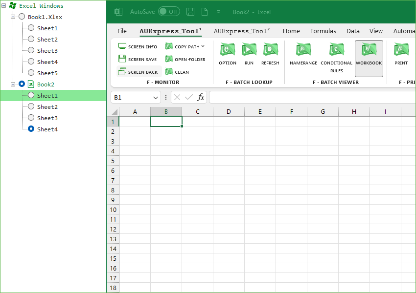

Ctrl + 1: mở rộng hoặc thu gọn danh sách nodes (hiện tại).
Ctrl + ↓: đi đến vị trí node cuối cùng (worksheet cuối hoặc workbook cuối).
Ctrl + ↑: đi đến vị trí node đầu tiên (worksheet đầu tiên hoặc workbook đầu tiên).
Đổi tên sheet: click label để đổi tên.
Xóa sheet, ẩn sheet, tạo sheet mới: sử dụng menu chuột phải.
Di chuyển sheet: click label kéo thả.
Close hoặc save workbooks.
Xem video Demo.
Related function
NUMBERTOWORDS Hàm đọc số thành chữ (phiên bản Anh-Việt).
GROUPBY Phân nhóm bảng dữ liệu dựa trên một mảng dữ liệu chỉ định, hỗ trợ tính toán tùy chỉnh.
XGROUP Hàm mở rộng của GROUP. (hỗ trợ các hàm nâng cao).
FLOOKUP (feature) Nhập liệu nâng cao, lọc-xuất nhiều dữ liệu đồng thời (Ribbon).
Return to Home